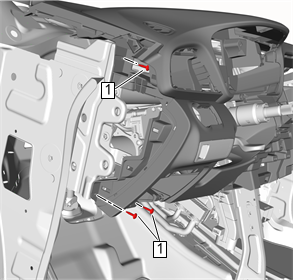
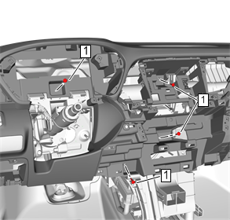
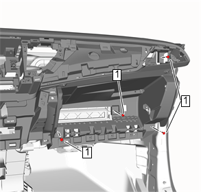
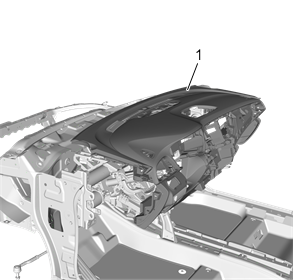

仪表板总成的更换
拆卸程序
1.
停用辅助充气式约束系统。
辅助充气式约束系统停用和启用
2.
挡风玻璃装饰条»拆卸—
挡风玻璃装饰条的更换
3.
方向盘»拆卸—
方向盘的更换
4.
转向信号开关»拆卸—
转向信号开关的更换
5.
挡风玻璃刮水器和洗涤器开关»拆卸—
挡风玻璃刮水器和洗涤器开关的更换
6.
仪表板外装饰盖»拆卸—
仪表板外装饰盖的更换
7.
仪表板装饰板饰件—左侧»拆卸—
仪表板装饰板饰件的更换－左侧
8.
仪表板装饰板饰件—右侧»拆卸—
仪表板装饰板饰件的更换－右侧
9.
仪表板膝垫储物箱»拆卸—
仪表板膝垫储物箱的更换
10.
仪表板中间装饰板饰件»拆卸—
仪表板中间装饰板饰件的更换
11.
仪表板组合仪表装饰板»拆卸—
仪表板组合仪表装饰板的更换
12.
组合仪表»拆卸—
组合仪表的更换
13.
仪表板下中间装饰板»拆卸—
仪表板下中间装饰板的更换
14.
仪表板上中央储物箱»拆卸—
仪表板上中央储物箱的更换
15.
收音机»拆卸—
收音机的更换（IO4）
、
收音机的更换（IO6）
16.
收音机前中央扬声器»拆卸—
收音机前中央扬声器的更换
17.
日间行车灯环境光照传感器嵌框»拆卸—
日间行车灯环境光照传感器嵌框的更换
18.
前方碰撞警报显示器嵌框»拆卸—
前方碰撞警报显示器嵌框的更换
19.
仪表板储物箱»拆卸—
仪表板中央储物箱的更换
20.
前地板控制台»拆卸—
前地板控制台的更换

21.
仪表板总成左侧螺栓（1）»拆下[3x]

22.
仪表板总成中间螺栓（1）»拆下[4x]

23.
仪表板总成右侧螺栓（1）»拆下[4x]

24.
拆下仪表板总成（1）。
安装程序
1.
仪表板总成（1）»安装
告诫：
参见
有关紧固件的告诫
。
2.
仪表板总成右侧螺栓（1）»安装并紧固[4x]
2.5 N•m( 22 lb in)
3.
仪表板总成中间螺栓（1）»安装并紧固[4x]
2.5 N•m( 22 lb in)
4.
仪表板总成左侧螺栓（1）»安装并紧固[3x]
2.5 N•m( 22 lb in)
5.
前地板控制台»安装—
前地板控制台的更换
6.
仪表板储物箱»安装—
仪表板中央储物箱的更换
7.
前方碰撞警报显示器嵌框»安装—
前方碰撞警报显示器嵌框的更换
8.
日间行车灯环境光照传感器嵌框»安装—
日间行车灯环境光照传感器嵌框的更换
9.
收音机前中央扬声器»安装—
收音机前中央扬声器的更换
10.
收音机»安装—
收音机的更换（IO4）
、
收音机的更换（IO6）
11.
仪表板上中央储物箱»安装—
仪表板上中央储物箱的更换
12.
仪表板下中间装饰板»安装—
仪表板下中间装饰板的更换
13.
组合仪表»安装—
组合仪表的更换
14.
仪表板组合仪表装饰板»安装—
仪表板组合仪表装饰板的更换
15.
仪表板中间装饰板饰件»安装—
仪表板中间装饰板饰件的更换
16.
仪表板膝垫储物箱»安装—
仪表板膝垫储物箱的更换
17.
仪表板装饰板饰件—右侧»安装—
仪表板装饰板饰件的更换－右侧
18.
仪表板装饰板饰件—左侧»安装—
仪表板装饰板饰件的更换－左侧
19.
仪表板外装饰盖»安装—
仪表板外装饰盖的更换
20.
挡风玻璃刮水器和洗涤器开关»安装—
挡风玻璃刮水器和洗涤器开关的更换
21.
转向信号开关»安装—
转向信号开关的更换
22.
方向盘»安装—
方向盘的更换
23.
挡风玻璃装饰条»安装—
挡风玻璃装饰条的更换
24.
启用辅助充气式约束系统。
辅助充气式约束系统停用和启用